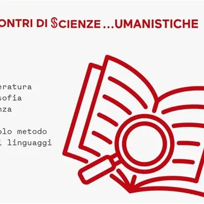

da sab 28 nov a sab 12 dic
Incontri di scienze… umanistiche
Quando pensiamo alla parola scienza immaginiamo spesso un laboratorio, un microscopio, una persona in camice bianco. È un’associazione immediata, ma riduttiva: la scienza infatti non è una disciplina, è prima di tutto un metodo per conoscere il mondo. Con la rassegna di tre…
 Indicazioni
Indicazioni
- Costi e prenotazioni
- Costo non indicato · Prenotazione non indicata
- Programma
- Programma da verificare. Apri la fonte ufficiale per orari e possibili aggiornamenti.
- In caso di maltempo
- Nessuna indicazione specifica pubblicata.
- Note
- Acquisito automaticamente dalla fonte.
L’EVENTO
Descrizione completa
Quando pensiamo alla parola scienza immaginiamo spesso un laboratorio, un microscopio, una persona in camice bianco. È un’associazione immediata, ma riduttiva: la scienza infatti non è una disciplina, è prima di tutto un metodo per conoscere il mondo.
Con la rassegna di tre Incontri di scienze… umanistiche , l’Immaginario Scientifico propone un viaggio proprio in questa prospettiva, esplorando ambiti come la storia dell’arte, la letteratura e la filosofia, per superare una distinzione solo apparente tra cultura scientifica e cultura umanistica e riscoprire il filo che unisce tutte le forme della ricerca.
Ogni incontro sarà accompagnato da una delle multivisioni dell’Immaginario Scientifico: perché le immagini sono da sempre uno degli strumenti privilegiati e trasversali con cui il museo racconta la conoscenza.
VISIONI DEL SAPERE: DIALOGO FRA ARTE E SCIENZA sabato 28 novembre 2026, ore 16.00 Che cosa accomuna un artista del Rinascimento e uno scienziato? Più di quanto si possa immaginare. Osservare con una matita in mano significa analizzare la realtà, comprenderne le relazioni e costruirne un modello: un processo sorprendentemente vicino al metodo scientifico.
Attraverso i disegni di Piero della Francesca e Leonardo da Vinci, l’incontro mostrerà come prospettiva, geometria, anatomia e rappresentazione visiva siano stati strumenti di ricerca oltre che di espressione artistica. Un percorso che affonda le proprie radici nelle innovazioni di Filippo Brunelleschi e Lorenzo Ghiberti e anticipa l’idea moderna di conoscenza fondata sull’osservazione e sull’esperienza. Relatore: Maurizio Lorber , storico dell’arte, docente e ricercatore, da anni impegnato nello studio dei rapporti tra arte e scienza. PINOCCHIO NEGLI ABISSI: LETTERATURA, MARE E IMMAGINARIO sabato 5 dicembre 2026, ore 16.00 Il mare attraversa Le avventure di Pinocchio assumendo significati simbolici, narrativi e scientifici. Ma è soprattutto nei numerosi racconti ispirati al celebre burattino, pubblicati tra la fine dell’Ottocento e la prima metà del Novecento, che gli abissi marini diventano teatro di esplorazioni fantastiche e occasione per raccontare la scoperta dell’ignoto. Partendo da queste opere, l’incontro esplora il rapporto tra letteratura, immaginario e conoscenza del mare, mettendo in luce come le rappresentazioni degli ambienti marini riflettano il dialogo continuo tra invenzione narrativa e progresso scientifico. Relatrice: Rosa Necchi , docente di Letteratura italiana all’Università degli Studi di Trieste. Le sue ricerche riguardano, tra gli altri temi, il rapporto tra letteratura e scienza, la letteratura di viaggio e quella per l’infanzia.
DAI DISEGNI DI GALILEO AI MARZIANI: IMMAGINI TRA SCIENZA E ARTE sabato 12 dicembre 2026, ore 16.00 Quando Galileo Galilei rivolse il cannocchiale verso il cielo, le sue osservazioni cambiarono per sempre il modo di guardare l’universo. Ma ciò che aveva visto doveva essere raccontato anche a chi non poteva osservare direttamente attraverso quello strumento. L’incontro ripercorre questa vicenda mostrando come il desiderio di vedere e la necessità di trasformare l’osservazione in immagini abbiano avuto un ruolo fondamentale nello sviluppo della scienza moderna, fino ad alimentare l’idea che potessero esistere i marziani. Un viaggio al confine tra osservazione scientifica, rappresentazione artistica e immaginazione. Relatore: Andrea Strollo , professore associato di Logica e Filosofia della Scienza presso il Dipartimento di Studi Umanistici dell’Università di Trieste.
Gli incontri sono inclusi nel biglietto d'ingresso al museo.
IL PROGRAMMA
Programma e orari
Appuntamenti raccolti dalle fonti elencate. Dove manca un orario, non è ancora disponibile in questa scheda.
Programma pubblicato
- Dal 2026-11-28 al 2026-12-12
INFORMAZIONI UTILI
Prima di partire
- Controllare la fonte prima di partire.
ORGANIZZAZIONE